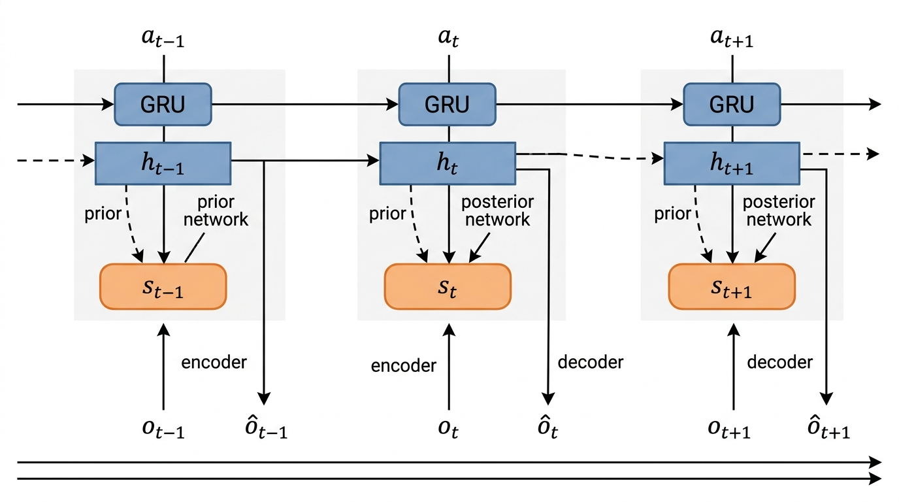

Prerequisites
This section requires familiarity with PyTorch (autograd, nn.Module,
training loops), variational inference basics (Kullback-Leibler (KL) divergence, reparameterization
trick) from
Chapter 32,
and recurrent neural networks at a conceptual level. All components are built from
scratch, so no prior world model experience is needed.
A world model learns to predict what happens next: given the current state and an action, it produces a distribution over the next state. When the raw observation space is high-dimensional (images, spectra, molecular conformations), operating directly in observation space is wasteful and fragile. Latent dynamics models solve this by learning a compact latent state that captures the information relevant for prediction, then modeling dynamics entirely within that latent space. The Recurrent State-Space Model (RSSM) is the dominant architecture for this task, splitting the latent state into a deterministic component (memory) and a stochastic component (uncertainty). Training uses the Evidence Lower Bound (ELBO), the same variational objective that appears in Variational Autoencoders (VAEs) (Chapter 34) but extended to sequential data.
1. Why Latent Dynamics?
Consider a robot arm performing chemical synthesis. Its camera produces 84x84 RGB images at each timestep, yielding an observation space of \(\mathbb{R}^{84 \times 84 \times 3}\). Predicting the next image pixel-by-pixel is a 21,168-dimensional regression problem, and most of those pixels (the static lab bench, the walls) carry no information about the dynamics. A latent dynamics model first encodes each observation into a compact representation \(z_t \in \mathbb{R}^d\) where \(d \ll 21{,}168\), then models transitions in this latent space: \(p(z_{t+1} | z_t, a_t)\). The savings are dramatic: both in the dimensionality of the prediction problem and in the amount of training data required.
A latent dynamics model is a neural network that predicts environment transitions in a compressed, learned coordinate system rather than in raw observation space. Low-dimensional latent spaces make prediction, planning, and uncertainty estimation tractable for environments whose raw observations (images, spectra, sensor arrays) are far too large to model directly. Three components implement this: an encoder maps each observation to a latent vector, a transition network predicts the next latent vector given the current one and an action, and a decoder maps latent vectors back to observations. Together, these form an end-to-end pipeline trained with reconstruction loss. Use a latent dynamics model when observations are high-dimensional and you need multi-step prediction or planning. Use a direct (observation-space) dynamics model only when the state is already compact (fewer than roughly 20 continuous dimensions) and you want to avoid learning an encoder and decoder.
Compression as Automated Variable Discovery
This compression does more than save compute. It forces the model to identify the variables that matter for prediction: arm position, liquid color, temperature. These are the same quantities a scientist would record in a lab notebook, and the latent dynamics model discovers them automatically from raw observations. In short: The latent space does not merely compress observations; it distills them into the variables that govern what happens next.
Common Misconception
A frequent misunderstanding is that the latent space in a latent dynamics model is simply a compressed copy of the observation, like a JPEG of an image. In reality, the latent representation is shaped by the dynamics objective, not just reconstruction quality: the model learns to keep information that helps predict the future and discard information that does not, even if that discarded information would improve pixel-level reconstruction. Two observations that look very different (a beaker photographed from two angles) may map to nearly the same latent state if they imply the same future dynamics, while two observations that look nearly identical (the same beaker at 99 C vs. 101 C) may map to distant latent states if the temperature difference triggers a phase change.
A well-trained latent state \(z_t\) is a sufficient statistic for predicting future observations: \(p(o_{t+1:T} | o_{1:t}, a_{1:T}) \approx p(o_{t+1:T} | z_t, a_{t:T})\). The model strips away everything in the observation that is irrelevant to the future. For scientific discovery, this means the model automatically identifies the minimal set of variables needed to predict the outcome of an experiment, a form of automated dimensionality reduction that complements the representation learning methods of Chapter 26.
2. The Recurrent State-Space Model (RSSM)
Without the right latent structure, world models fail silently: they produce confident predictions that diverge from reality within a few steps, leading planners to choose actions that look optimal in imagination but perform catastrophically in the real environment. The RSSM architecture was designed to prevent exactly this failure.
Knowing that a compact latent space helps is only the first step; the critical design question is how to structure that space so it can faithfully capture both the predictable and the uncertain aspects of real-world dynamics.
The RSSM, introduced by Hafner et al. (2019) in the PlaNet paper and refined through DreamerV1, V2, and V3, is among the most successful latent dynamics architectures developed so far. Its key innovation is splitting the latent state into two components:
- Deterministic state \(h_t \in \mathbb{R}^{d_h}\): updated by a Gated Recurrent Unit (GRU) cell, this component carries forward information across time steps like a memory. It captures the predictable, deterministic aspects of the dynamics.
- Stochastic state \(s_t \in \mathbb{R}^{d_s}\): sampled from a learned distribution conditioned on \(h_t\), this component captures the inherent randomness in the environment. In DreamerV3, \(s_t\) uses a categorical distribution (32 classes across 32 dimensions) rather than a Gaussian, which substantially mitigates posterior collapse (where the KL regularization drives the learned posterior to match the prior so closely that the stochastic state carries no useful information).
Checkpoint
So far: a latent dynamics model compresses high-dimensional observations into a compact latent vector, and the RSSM splits that vector into a deterministic part (memory, carried by a GRU) and a stochastic part (uncertainty, sampled from a learned categorical distribution), giving the model both stable recall and the ability to represent environmental randomness.
The full RSSM consists of four components, each implemented as a neural network. Figure 44.1 illustrates how these components connect at a single timestep. Figure 44.1.1 illustrates RSSM architecture dataflow.

The sequence model is a GRU that updates the deterministic state. The prior predicts the stochastic state from the deterministic state alone (no observation), which is what we use during planning when we imagine trajectories without real observations. The posterior incorporates the actual observation \(o_t\) to produce a more accurate stochastic state during training. The decoder reconstructs the observation from the full latent state \((h_t, s_t)\), providing the reconstruction signal for learning.
Step-Through: One RSSM Timestep
Trace one update step with concrete numbers. Suppose \(h_0 = [0.1, 0.3]\) (deterministic, size 2 for illustration), \(s_0 = [1, 0, 0, 1]\) (two categoricals, two classes each), and \(a_0 = [0.5]\).
Step 1 (Sequence model): Concatenate \([s_0; a_0] = [1, 0, 0, 1, 0.5]\), project through a linear layer and ELU, then feed into the GRU with \(h_0\). Output: \(h_1 = [0.42, -0.11]\).
Step 2 (Prior): Feed \(h_1\) alone through the prior network. It produces logits \([1.2, -0.3, 0.7, 0.1]\), reshaped to two categoricals: \([1.2, -0.3]\) and \([0.7, 0.1]\). Softmax gives probabilities \([0.82, 0.18]\) and \([0.65, 0.35]\). Sampling yields prior \(\hat{s}_1 = [1, 0, 1, 0]\).
Step 3 (Posterior): Feed \([h_1; o_1]\) (deterministic state concatenated with the real observation) through the posterior network. It produces logits \([2.1, -1.0, -0.5, 1.8]\), giving probabilities \([0.96, 0.04]\) and \([0.09, 0.91]\). Sampling yields posterior \(s_1 = [1, 0, 0, 1]\). The KL between posterior \([0.96, 0.04]\) and prior \([0.82, 0.18]\) for the first categorical is \(0.96 \ln(0.96/0.82) + 0.04 \ln(0.04/0.18) \approx 0.10\) nats.
Step 4 (Decode): Feed \([h_1; s_1] = [0.42, -0.11, 1, 0, 0, 1]\) through the decoder to reconstruct \(\hat{o}_1\). The mean squared error (MSE) between \(\hat{o}_1\) and real \(o_1\) is the reconstruction loss for this step.
A chemical engineer monitors a continuous stirred-tank reactor (CSTR) through temperature sensors, pressure gauges, and spectroscopic readings (collectively, the observation \(o_t\)). The deterministic state \(h_t\) captures the slow, predictable evolution of the reaction: gradual temperature rise, steady pressure increase. The stochastic state \(s_t\) captures fast, unpredictable fluctuations: turbulent mixing events, catalyst deactivation spikes, measurement noise. By separating these two timescales, the RSSM can make accurate multi-step predictions of the reactor's behavior, enabling the planner (Section 44.3) to optimize feed rates and cooling schedules without running dangerous experiments on the real reactor.
The following implementation builds the core RSSM in PyTorch, with each component as a separate module composed together.
import torch
import torch.nn as nn
import torch.nn.functional as F
from torch.distributions import OneHotCategorical
class RSSM(nn.Module):
"""Recurrent State-Space Model following the DreamerV3 architecture.
Splits latent state into deterministic (h) and stochastic (s) parts.
Stochastic state uses categorical distributions (num_classes x num_categoricals).
"""
def __init__(
self,
obs_dim: int,
action_dim: int,
det_size: int = 256,
num_categoricals: int = 32,
num_classes: int = 32,
hidden_size: int = 256,
):
super().__init__()
self.det_size = det_size
self.num_categoricals = num_categoricals
self.num_classes = num_classes
self.stoch_size = num_categoricals * num_classes
# Sequence model: GRU updates deterministic state
self.gru_input_proj = nn.Linear(
self.stoch_size + action_dim, hidden_size
)
self.gru_cell = nn.GRUCell(hidden_size, det_size)
# Prior: predict stochastic state from deterministic alone
self.prior_net = nn.Sequential(
nn.Linear(det_size, hidden_size),
nn.ELU(),
nn.Linear(hidden_size, self.stoch_size),
)
# Posterior: predict stochastic state from deterministic + observation
self.posterior_net = nn.Sequential(
nn.Linear(det_size + obs_dim, hidden_size),
nn.ELU(),
nn.Linear(hidden_size, self.stoch_size),
)
# Observation decoder
self.decoder = nn.Sequential(
nn.Linear(det_size + self.stoch_size, hidden_size),
nn.ELU(),
nn.Linear(hidden_size, hidden_size),
nn.ELU(),
nn.Linear(hidden_size, obs_dim),
)
# Reward predictor (for reinforcement learning tasks)
self.reward_head = nn.Sequential(
nn.Linear(det_size + self.stoch_size, hidden_size),
nn.ELU(),
nn.Linear(hidden_size, 1),
)
def initial_state(self, batch_size: int, device: torch.device):
"""Return zero-initialized deterministic and stochastic states."""
h = torch.zeros(batch_size, self.det_size, device=device)
s = torch.zeros(batch_size, self.stoch_size, device=device)
return h, s
def _categorical_straight_through(self, logits: torch.Tensor):
"""Sample from categorical with straight-through gradients."""
shape = logits.shape[:-1] # (batch, num_categoricals)
logits_reshaped = logits.view(*shape, self.num_categoricals, self.num_classes)
dist = OneHotCategorical(logits=logits_reshaped)
sample = dist.sample()
# Straight-through: forward uses sample, backward uses softmax
probs = dist.probs
sample_st = sample + probs - probs.detach()
return sample_st.view(*shape[:-0], self.stoch_size), dist
def sequence_step(self, h_prev, s_prev, action):
"""One step of the sequence model (GRU)."""
gru_input = self.gru_input_proj(torch.cat([s_prev, action], dim=-1))
h = self.gru_cell(F.elu(gru_input), h_prev)
return h
def prior(self, h):
"""Predict stochastic state distribution from deterministic state."""
logits = self.prior_net(h)
s, dist = self._categorical_straight_through(logits)
return s, dist, logits
def posterior(self, h, obs):
"""Predict stochastic state distribution from deterministic + observation."""
logits = self.posterior_net(torch.cat([h, obs], dim=-1))
s, dist = self._categorical_straight_through(logits)
return s, dist, logits
def decode(self, h, s):
"""Reconstruct observation from full latent state."""
latent = torch.cat([h, s], dim=-1)
obs_pred = self.decoder(latent)
reward_pred = self.reward_head(latent)
return obs_pred, reward_pred
def observe(self, observations, actions):
"""Process a sequence of (observation, action) pairs.
Args:
observations: (batch, time, obs_dim)
actions: (batch, time, action_dim)
Returns:
Dictionary of posterior states, prior states, predictions.
"""
batch_size, seq_len = observations.shape[:2]
device = observations.device
h, s = self.initial_state(batch_size, device)
prior_logits_list = []
posterior_logits_list = []
obs_preds = []
reward_preds = []
for t in range(seq_len):
# Step 1: update deterministic state
h = self.sequence_step(h, s, actions[:, t])
# Step 2: compute prior and posterior
_, _, prior_logits = self.prior(h)
s, _, posterior_logits = self.posterior(h, observations[:, t])
# Step 3: decode from posterior state (for training)
obs_pred, reward_pred = self.decode(h, s)
prior_logits_list.append(prior_logits)
posterior_logits_list.append(posterior_logits)
obs_preds.append(obs_pred)
reward_preds.append(reward_pred)
return {
"prior_logits": torch.stack(prior_logits_list, dim=1),
"posterior_logits": torch.stack(posterior_logits_list, dim=1),
"obs_preds": torch.stack(obs_preds, dim=1),
"reward_preds": torch.stack(reward_preds, dim=1),
}
def imagine(self, initial_h, initial_s, actions):
"""Roll out the model without observations (for planning).
Args:
initial_h: (batch, det_size) starting deterministic state
initial_s: (batch, stoch_size) starting stochastic state
actions: (batch, horizon, action_dim) planned actions
Returns:
Predicted observations, rewards, and states for each step.
"""
h, s = initial_h, initial_s
horizon = actions.shape[1]
obs_preds = []
reward_preds = []
for t in range(horizon):
h = self.sequence_step(h, s, actions[:, t])
s, _, _ = self.prior(h) # No observation: use prior
obs_pred, reward_pred = self.decode(h, s)
obs_preds.append(obs_pred)
reward_preds.append(reward_pred)
return {
"obs_preds": torch.stack(obs_preds, dim=1),
"reward_preds": torch.stack(reward_preds, dim=1),
}Several design choices in Listing 44.1 deserve attention. The stochastic state uses a categorical distribution (32 categories each with 32 classes) rather than a Gaussian. DreamerV3 showed that categorical distributions substantially mitigate the posterior collapse problem that plagues Gaussian latent variables, where the KL term in the ELBO drives the posterior toward the prior, effectively ignoring the observations. The straight-through gradient estimator (a technique that uses the discrete sample in the forward pass but substitutes a continuous approximation in the backward pass, enabling gradient flow through discrete choices) lets us backpropagate through the discrete sampling operation by using the continuous softmax probabilities in the backward pass.
3. The ELBO Training Objective
How do we train an RSSM? The model defines a generative process: at each time step, it samples a latent state and produces an observation. The true posterior over latent states given observations is intractable, so we use variational inference. The objective is the ELBO, extended to sequential data.
For a sequence of observations \(o_{1:T}\) and actions \(a_{1:T}\), the ELBO is:
$$ \mathcal{L} = \sum_{t=1}^{T} \Big[ \underbrace{\mathbb{E}_{q_\phi(s_t | h_t, o_t)} \big[ \log p_\phi(o_t | h_t, s_t) \big]}_{\text{reconstruction}} - \underbrace{\beta \cdot D_{\mathrm{KL}} \big[ q_\phi(s_t | h_t, o_t) \,\|\, p_\phi(s_t | h_t) \big]}_{\text{dynamics regularization}} \Big] $$Each term has a clear interpretation:
- Reconstruction term: the posterior state \((h_t, s_t)\) must produce accurate observation predictions. This teaches the encoder to extract relevant features and the decoder to faithfully reconstruct them.
- KL term: the posterior (which sees the observation) must stay close to the prior (which does not). This ensures that the prior alone can make reasonable predictions, which is essential for planning when no observations are available. The coefficient \(\beta\) controls the balance; DreamerV3 uses a free-bits strategy where the KL is only penalized above a minimum threshold.
The KL divergence \(D_{\mathrm{KL}}[q \| p]\) penalizes disagreement between the posterior (what actually happened, given the observation) and the prior (what the model predicted would happen, without the observation). Minimizing this divergence forces the prior to become an accurate dynamics predictor. In effect, the posterior acts as a "teacher" that shows the prior the correct answer, and the KL term is the "exam score." Over training, the prior learns to predict the stochastic state well enough that it can operate independently during planning.
Mental Model
Think of the RSSM's prior and posterior like a weather forecaster and a rooftop thermometer. The prior is the forecaster's prediction for tomorrow's temperature, made the night before using only past data and a mental model of weather patterns. The posterior is the updated estimate after stepping outside and reading the thermometer in the morning. The KL term in the ELBO measures how far off the forecast was from the thermometer-corrected estimate. Over many days of training, the forecaster's predictions improve until they nearly match what the thermometer reveals, at which point the forecaster can make reliable multi-day predictions without checking the thermometer at all. That is exactly what happens during planning: the model rolls forward using only its prior (the forecast), with no access to real observations (the thermometer).
The following listing implements the ELBO loss function with the free-bits strategy from DreamerV3.
def compute_elbo_loss(
rssm_output: dict,
observations: torch.Tensor,
rewards: torch.Tensor,
free_bits: float = 1.0,
kl_beta: float = 1.0,
reward_weight: float = 1.0,
):
"""Compute the ELBO loss for RSSM training.
Args:
rssm_output: dictionary from RSSM.observe()
observations: (batch, time, obs_dim) ground truth
rewards: (batch, time, 1) ground truth rewards
free_bits: minimum KL before penalty applies (nats)
kl_beta: weight on KL term
reward_weight: weight on reward prediction loss
Returns:
Total loss and a dictionary of component losses for logging.
"""
# Reconstruction loss: MSE between predicted and true observations
obs_loss = F.mse_loss(rssm_output["obs_preds"], observations)
# Reward prediction loss
rew_loss = F.mse_loss(
rssm_output["reward_preds"], rewards
)
# KL divergence between posterior and prior (categorical distributions)
prior_logits = rssm_output["prior_logits"]
posterior_logits = rssm_output["posterior_logits"]
# Reshape to (batch * time, num_categoricals, num_classes)
batch, time = prior_logits.shape[:2]
num_cat = 32 # num_categoricals
num_cls = 32 # num_classes
prior_reshaped = prior_logits.view(batch * time, num_cat, num_cls)
posterior_reshaped = posterior_logits.view(batch * time, num_cat, num_cls)
# Compute KL for each categorical dimension
prior_probs = F.softmax(prior_reshaped, dim=-1)
posterior_probs = F.softmax(posterior_reshaped, dim=-1)
kl_per_categorical = (
posterior_probs * (
torch.log(posterior_probs + 1e-8)
- torch.log(prior_probs + 1e-8)
)
).sum(dim=-1) # (batch*time, num_cat)
# Free bits: only penalize KL above threshold per categorical
kl_free = torch.clamp(kl_per_categorical, min=free_bits)
kl_loss = kl_free.mean()
# Total ELBO loss (negative because we maximize ELBO)
total_loss = obs_loss + reward_weight * rew_loss + kl_beta * kl_loss
return total_loss, {
"obs_loss": obs_loss.item(),
"reward_loss": rew_loss.item(),
"kl_loss": kl_loss.item(),
"total_loss": total_loss.item(),
}4. Transformer World Models
The ELBO gives us a principled way to train any latent dynamics model, but the RSSM is not the only architecture that can serve as the backbone; the same training objective applies equally well when the recurrent core is replaced by an attention mechanism.
The RSSM processes sequences one step at a time through its GRU cell. Transformer world models (Micheli et al., 2023; Robine et al., 2023) replace this recurrence with causal self-attention (an attention mechanism where each position can only attend to itself and earlier positions, preventing information from the future from leaking into predictions), processing entire trajectories in parallel. The key advantage is that attention can capture long-range dependencies without the information bottleneck of a fixed-size hidden state. The key disadvantage is that generation remains autoregressive (each predicted token is conditioned on all previously generated tokens, so outputs must be produced one at a time in sequence), so the wall-clock cost of rolling out \(H\) steps is \(O(H^2)\) rather than \(O(H)\).
The architecture tokenizes each timestep's state and action into a sequence of tokens, then applies a causal transformer (GPT-style) to predict the next timestep's tokens. IRIS (Micheli et al., 2023) tokenizes observations using a discrete autoencoder (Vector-Quantized VAE, or VQ-VAE), producing a sequence of discrete tokens per image. The transformer then models the joint sequence of observation tokens and action tokens.
class TransformerWorldModel(nn.Module):
"""Simplified transformer-based world model.
Processes (state, action) sequences with causal self-attention.
Suitable for low-dimensional state spaces (no image tokenization).
"""
def __init__(
self,
obs_dim: int,
action_dim: int,
d_model: int = 256,
nhead: int = 4,
num_layers: int = 4,
max_seq_len: int = 128,
):
super().__init__()
self.d_model = d_model
# Project (obs, action) pair into transformer dimension
self.input_proj = nn.Linear(obs_dim + action_dim, d_model)
# Learned positional encoding
self.pos_embedding = nn.Embedding(max_seq_len, d_model)
# Causal transformer
encoder_layer = nn.TransformerEncoderLayer(
d_model=d_model,
nhead=nhead,
dim_feedforward=4 * d_model,
activation="gelu",
batch_first=True,
norm_first=True,
)
self.transformer = nn.TransformerEncoder(
encoder_layer, num_layers=num_layers
)
# Output heads
self.obs_head = nn.Linear(d_model, obs_dim)
self.reward_head = nn.Linear(d_model, 1)
def forward(self, observations, actions):
"""Predict next observations and rewards.
Args:
observations: (batch, time, obs_dim)
actions: (batch, time, action_dim)
Returns:
obs_preds: (batch, time, obs_dim) next-obs predictions
reward_preds: (batch, time, 1) reward predictions
"""
batch, time = observations.shape[:2]
x = self.input_proj(torch.cat([observations, actions], dim=-1))
positions = torch.arange(time, device=x.device)
x = x + self.pos_embedding(positions)
# Causal mask: each position attends only to itself and earlier
causal_mask = nn.Transformer.generate_square_subsequent_mask(
time, device=x.device
)
x = self.transformer(x, mask=causal_mask)
obs_preds = self.obs_head(x)
reward_preds = self.reward_head(x)
return obs_preds, reward_predsWhen should you choose a transformer world model over an RSSM? Empirical evidence (circa 2023) shows that transformer world models such as IRIS match or exceed RSSM-based agents on the Atari 100k benchmark, a standardized evaluation using only 100,000 environment interactions. However, RSSMs generate faster because the GRU state update costs \(O(1)\) per step, while the transformer must attend to all previous steps. For planning applications that roll out thousands of trajectories (Section 44.3), this difference matters. (A planner evaluating 1,000 candidate trajectories of length 50 executes roughly 50,000 GRU steps with an RSSM, but over 1.25 million attention operations with a transformer.) As of 2025, DreamerV3 remains broadly competitive with transformer world models on most published benchmarks, though results vary by domain. Hybrid architectures that combine RSSM-style latent states with transformer sequence models are an active area of development.
The RSSM implementation above is pedagogical. For production use, the dreamer-pytorch library provides a complete DreamerV3 implementation with image encoders (convolutional neural network, or CNN), symlog predictions (where the model predicts \(\mathrm{sign}(x) \cdot \ln(|x| + 1)\) instead of raw values, compressing the dynamic range of targets like rewards that span many orders of magnitude), layer normalization, and the full actor-critic training loop. What took 200+ lines above is a single configuration:
from dreamer_torch import DreamerV3
agent = DreamerV3(
obs_space={"image": (3, 64, 64)},
act_space={"action": 6},
config=DreamerV3.defaults.update(
rssm={"deter": 4096, "units": 1024, "stoch": 32, "classes": 32},
encoder={"mlp_keys": "", "cnn_keys": "image"},
),
)
# agent.train(replay_buffer) handles ELBO optimization internally
The library handles categorical straight-through gradients, free-bits KL, symlog
transforms for reward prediction, and distributed training. The line-count reduction
from our from-scratch implementation is roughly 10x. Note that the official
DreamerV3 codebase by Hafner et al. uses JAX rather than PyTorch; as of 2025,
dreamer-torch is a community-maintained PyTorch port.
5. RSSM vs. Transformer: Architectural Trade-offs
The choice between RSSM and transformer world models involves several trade-offs that depend on the specific discovery application:
| Property | RSSM (DreamerV3) | Transformer (IRIS/TWM) |
|---|---|---|
| State representation | Fixed-size \((h_t, s_t)\) | Growing context window |
| Long-range dependencies | Limited by GRU capacity | Attention captures directly |
| Generation cost per step | \(O(1)\) | \(O(t)\) due to attention |
| Sample efficiency | Strong in both 100k and full-data regimes | Competitive at 100k interactions (circa 2023) |
| Stochasticity modeling | Explicit (prior/posterior) | Implicit (next-token prediction) |
| Uncertainty quantification | Built-in via KL divergence | Requires ensembles or calibration |
| Planning rollout speed | Fast (parallel GRU steps) | Slower (sequential attention) |
For scientific discovery applications where uncertainty quantification matters (and in most experimental sciences it does), the RSSM's explicit stochastic state provides a natural advantage. The prior-posterior divergence gives a built-in signal for epistemic uncertainty (uncertainty about the model's own knowledge, as opposed to aleatoric uncertainty from inherent randomness in the environment): when the prior and posterior disagree strongly, the model is uncertain about the dynamics. Transformers require additional machinery (ensembles, conformal prediction) to achieve comparable uncertainty estimates.
Real-World Application: Autonomous Driving at Wayve
Wayve's GAIA-1 (2023) uses a latent dynamics world model to simulate driving scenarios for training and validating self-driving policies. The model encodes camera frames and vehicle telemetry into a latent space, then rolls out predicted futures conditioned on candidate steering and acceleration commands. This allows the system to evaluate thousands of "what if" maneuvers per second in latent space, far faster than running a physics-based driving simulator, while retaining enough fidelity to transfer learned policies to real vehicles on London streets.
The Diamond system (Alonso et al., 2024, "Diffusion for World Modeling," ICLR 2025) replaces the standard decoder with a diffusion model that generates high-fidelity observations conditioned on the latent state, achieving state-of-the-art visual quality in Atari game simulation while maintaining interactive frame rates. Meanwhile, hybrid architectures that swap the GRU in the RSSM sequence model for structured state-space layers (S4, Mamba; linear-time sequence models that use fixed-size recurrent state updates inspired by continuous-time dynamical systems) preserve constant-cost generation while capturing longer-range temporal patterns. These approaches are particularly promising for scientific applications where trajectories span thousands of steps (climate simulations, protein folding dynamics) and both long-range memory and calibrated uncertainty estimates are essential. The convergence of diffusion decoders and state-space backbones suggests that the next generation of world models will combine the RSSM's explicit uncertainty modeling with substantially richer observation generation.
6. Training an RSSM: The Complete Loop
With the architectural trade-offs understood, we can now turn from model design to the practical mechanics of fitting an RSSM to data collected from a real or simulated environment.
To train an RSSM world model, we need trajectories collected from the environment (or simulator). Each trajectory is a sequence of (observation, action, reward) tuples. The training loop alternates between collecting data using the current policy and updating the world model on batches sampled from a replay buffer (a data structure that stores past experience tuples and serves random mini-batches for training, decoupling data collection from gradient updates).
import gymnasium as gym
import numpy as np
from collections import deque
def collect_trajectories(env, policy, num_episodes=10):
"""Collect trajectories from a Gymnasium environment.
Args:
env: Gymnasium environment
policy: callable(obs) -> action
num_episodes: number of episodes to collect
Returns:
List of trajectory dicts with obs, actions, rewards arrays.
"""
trajectories = []
for _ in range(num_episodes):
obs_list, act_list, rew_list = [], [], []
obs, _ = env.reset()
done = False
while not done:
action = policy(obs)
next_obs, reward, terminated, truncated, _ = env.step(action)
obs_list.append(obs)
act_list.append(action)
rew_list.append(reward)
obs = next_obs
done = terminated or truncated
trajectories.append({
"observations": np.array(obs_list, dtype=np.float32),
"actions": np.array(act_list, dtype=np.float32),
"rewards": np.array(rew_list, dtype=np.float32),
})
return trajectories
def train_world_model(
rssm,
trajectories,
num_epochs=100,
batch_size=16,
seq_len=50,
lr=3e-4,
):
"""Train RSSM on collected trajectories.
Args:
rssm: RSSM model
trajectories: list of trajectory dicts
num_epochs: training epochs
batch_size: batch size
seq_len: subsequence length for training
lr: learning rate
Returns:
List of loss dictionaries per epoch.
"""
optimizer = torch.optim.Adam(rssm.parameters(), lr=lr)
history = []
for epoch in range(num_epochs):
epoch_losses = []
# Sample random subsequences from trajectories
for _ in range(max(1, len(trajectories) // batch_size)):
obs_batch, act_batch, rew_batch = [], [], []
for _ in range(batch_size):
traj = trajectories[np.random.randint(len(trajectories))]
max_start = len(traj["observations"]) - seq_len
if max_start <= 0:
start = 0
sl = len(traj["observations"])
else:
start = np.random.randint(max_start)
sl = seq_len
obs_batch.append(traj["observations"][start:start + sl])
act_batch.append(traj["actions"][start:start + sl])
rew_batch.append(traj["rewards"][start:start + sl])
# Pad to same length and convert to tensors
actual_len = min(len(o) for o in obs_batch)
obs_t = torch.tensor(
np.stack([o[:actual_len] for o in obs_batch])
)
act_t = torch.tensor(
np.stack([a[:actual_len] for a in act_batch])
)
rew_t = torch.tensor(
np.stack([r[:actual_len] for r in rew_batch])
).unsqueeze(-1)
# Ensure actions are float and correct shape
if act_t.dim() == 2:
act_t = act_t.unsqueeze(-1).float()
# Forward pass
output = rssm.observe(obs_t, act_t)
loss, loss_dict = compute_elbo_loss(output, obs_t, rew_t)
# Backward pass
optimizer.zero_grad()
loss.backward()
torch.nn.utils.clip_grad_norm_(rssm.parameters(), 100.0)
optimizer.step()
epoch_losses.append(loss_dict)
avg_loss = {
k: np.mean([d[k] for d in epoch_losses])
for k in epoch_losses[0]
}
history.append(avg_loss)
if (epoch + 1) % 20 == 0:
print(
f"Epoch {epoch+1}: total={avg_loss['total_loss']:.4f} "
f"obs={avg_loss['obs_loss']:.4f} "
f"kl={avg_loss['kl_loss']:.4f}"
)
return historyThe Universe in a Shoebox
DreamerV3's stochastic state uses 32 categorical dimensions with 32 classes each, yielding \(32^{32} \approx 1.46 \times 10^{48}\) possible discrete states. That number falls within two orders of magnitude of the estimated count of atoms in Earth (\(\approx 10^{50}\)). Yet this state space is learned from a few hundred thousand environment interactions and compressed into just 1,024 floating-point numbers. Ha and Schmidhuber's original 2018 "World Models" paper trained an agent that learned to play a car racing game entirely inside its own dream: the agent never touched the real environment during policy optimization, practicing instead against imagined rollouts from its latent model. The agent performed almost as well as one trained on real data, marking perhaps the first time a neural network literally dreamed its way to competence.
If you use Gaussian distributions instead of categoricals for the stochastic state, you may observe the KL term collapsing to zero while the reconstruction loss plateaus at a high value. This means the model is ignoring the stochastic state entirely, routing all information through the deterministic GRU. The free-bits strategy helps but does not fully solve the problem. DreamerV3's switch to categorical distributions was motivated precisely by this failure mode: categorical KL is harder to collapse because each categorical dimension independently encodes discrete information. If you must use Gaussians (for compatibility with downstream tasks that need continuous latent codes), consider adding an information bottleneck on the deterministic state to force information through the stochastic channel.
7. Connecting to the Discovery Workbench
In the Discovery Workbench architecture
(Chapter 6),
the world model serves as a simulation backend that slots into the
experiment planning pipeline. When the Workbench's optimization module (Chapter 45)
or experiment designer (Chapter 46) needs to evaluate a candidate action sequence,
it queries the world model rather than the real environment. The RSSM's
imagine() method is the Workbench API for this: pass an initial state
and a sequence of proposed actions, receive predicted observations and rewards.
The Workbench tracks the model's prediction uncertainty (via prior-posterior KL
divergence) and automatically triggers real experiments when the world model's
confidence drops below a configurable threshold.
Try It: Train an RSSM on CartPole and Visualize Imagined Rollouts
Build a working latent dynamics model in under an hour using the code from this section and standard Python libraries (PyTorch, Gymnasium, Matplotlib).
- Collect data. Install Gymnasium (
pip install gymnasium) and use thecollect_trajectoriesfunction from Listing 44.4 to gather 50 episodes fromCartPole-v1with a random policy (lambda obs: env.action_space.sample()). Save the trajectories to disk withtorch.save. - Train the RSSM. Instantiate the RSSM from Listing 44.1 with
obs_dim=4andaction_dim=1. Train for 200 epochs usingtrain_world_modelfrom Listing 44.4. Plot the reconstruction loss and KL loss curves with Matplotlib to confirm both decrease. - Imagine forward. Pick a trajectory from your dataset. Encode the
first 5 steps using
rssm.observe()to obtain a starting latent state, then callrssm.imagine()with the ground-truth actions for the remaining steps. Compare the predicted observations against the real observations by plotting each of the 4 CartPole state dimensions (cart position, cart velocity, pole angle, pole angular velocity) over time. - Measure rollout divergence. Compute the mean squared error between imagined and real observations at horizons of 5, 10, 20, and 40 steps. Plot MSE vs. horizon. You should see error grow roughly linearly or faster, illustrating the compounding prediction challenge that motivates replanning (Section 44.3).
- Ablate the stochastic state. Set
num_categoricals=1andnum_classes=2(minimal stochastic capacity) and retrain. Compare the horizon-vs-MSE curve against the full model. Does richer stochastic capacity improve long-horizon prediction on this simple environment?
Exercise 44.1.1
An RSSM is trained on trajectories from a pendulum environment with observation
dimension 3 (cos theta, sin theta, angular velocity) and action dimension 1 (torque).
The model uses 16 categoricals with 16 classes each. During imagination (no
observations), the model calls prior(h) to sample the stochastic state.
If the prior network outputs logits that are all equal (uniform distribution) for
every categorical dimension, what does this tell you about the quality of the learned
dynamics, and what concrete symptom would you observe in the imagined rollouts?
Hint
A uniform prior means the model assigns equal probability to every possible stochastic state. Think about what the stochastic state is supposed to encode (the unpredictable part of the next observation) and what happens when the model has no preference among \(16^{16}\) possibilities. Consider how this would affect the decoder's output when averaged over many sampled trajectories.
Lab: Measuring World Model Prediction Horizon
Goal: Empirically determine how far into the future an RSSM can predict before its error exceeds a usefulness threshold, and observe how stochastic capacity affects this horizon.
Tools: PyTorch, Gymnasium (Pendulum-v1), Matplotlib.
Use the RSSM from Listing 44.1 with obs_dim=3, action_dim=1.
Procedure (20 minutes): (1) Collect 100 episodes with a random policy.
(2) Train the RSSM for 300 epochs. (3) For 20 held-out episodes, encode the first 10
steps with observe(), then call imagine() for horizons 1
through 50. Record the per-step MSE between predicted and true observations.
(4) Plot MSE vs. horizon (mean and standard deviation across episodes).
What to vary: Train three models with stochastic capacities of (a) 4 categoricals, 4 classes, (b) 16 categoricals, 16 classes, and (c) 32 categoricals, 32 classes. Overlay all three MSE-vs-horizon curves on one plot.
What to observe: At what horizon does each model's mean MSE first exceed 0.1 (normalized observation scale)? Does larger stochastic capacity always help, or does it plateau? Check whether the standard deviation bands widen faster for smaller stochastic states, indicating higher variance in prediction quality.
Exercises
- (Conceptual) Explain why the RSSM needs both a prior and a posterior distribution over the stochastic state. What would go wrong if we trained only with the posterior and then tried to use the model for planning?
- (Coding) Modify the RSSM to use Gaussian stochastic states instead of categorical ones. Train both versions on CartPole trajectories and compare the KL divergence curves. Do you observe posterior collapse with the Gaussian version?
- (Analysis) The ELBO objective has a reconstruction term and a KL term. Plot how the balance between these two terms (controlled by \(\beta\)) affects one-step and five-step prediction accuracy. What value of \(\beta\) gives the best five-step predictions? Is it the same as the value that gives the best one-step predictions?
- (Research) DreamerV3 uses 32 categorical dimensions with 32 classes each, giving a stochastic state space of size \(32^{32} \approx 10^{48}\). Is this capacity necessary for simple environments like CartPole? Experiment with smaller stochastic states (e.g., 8 categoricals with 8 classes) and measure the effect on prediction quality.
What's Next
We now have a trained world model that can predict what will happen given any sequence of actions. In Section 44.2: Counterfactual Reasoning with World Models, we use this capability for a more subtle purpose: asking what would have happened if we had taken a different action in the past. This counterfactual reasoning ability transforms the world model from a mere predictor into a tool for causal understanding.
Bibliography
DreamerV3: the definitive RSSM architecture with categorical stochastic states, symlog predictions, and free-bits KL. The primary reference for this section.
The PlaNet paper that introduced the RSSM architecture and the latent overshooting objective.
The paper that popularized the "world models" framing, combining a VAE encoder with a Mixture Density Network RNN (MDN-RNN) dynamics model.
IRIS: the first transformer world model competitive with RSSMs, demonstrating that attention-based dynamics can achieve human-level Atari with 100k interactions.
The foundational VAE paper that introduced the ELBO objective and reparameterization trick, both essential to RSSM training.
The standard RL environment interface used for data collection in this section.